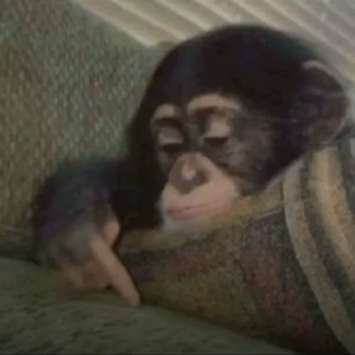
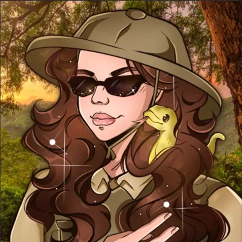

NOG geen komende events
Helaas zijn er NOG geen komende evenementen 😔
Yappelkaas presenteert:

Helaas zijn er NOG geen komende evenementen 😔

24 uur lang hebben wij 🔴LIVE op Twitch naar de video’s van Freek Vonk gekeken...
(al het dono geld ging naar het goede doel van Freek Vonk zelf)